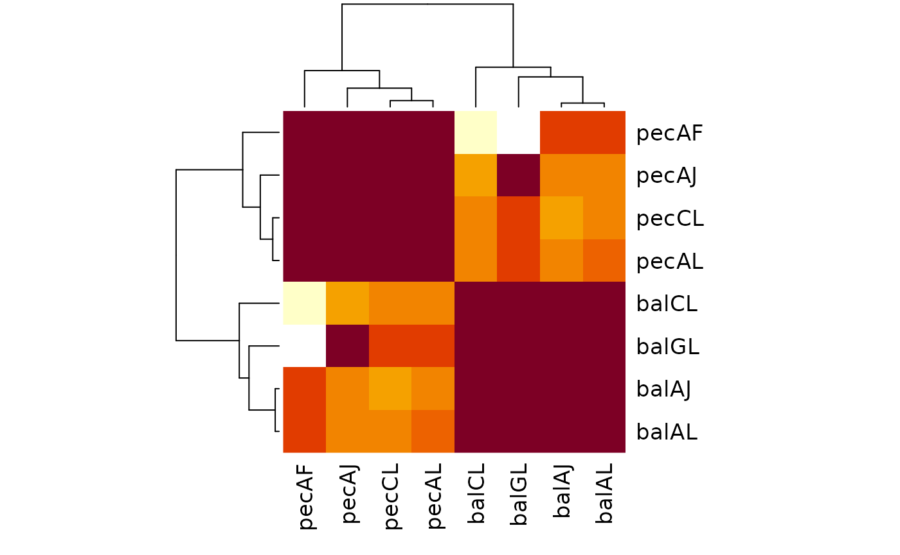

Trees with different leaves
Martin R. Smith
Source:vignettes/different-leaves.Rmd
different-leaves.RmdSometimes one may wish to compare trees whose tip sets only partially overlap: that is, certain leaves are missing in one tree or the other.
Whilst this process is computationally trivial, interpreting the resultant distances can require a little thought.
Let’s generate some simple trees to follow this through in practice:
library("TreeTools", quietly = TRUE)
balAL <- BalancedTree(letters[1:12])
balAJ <- DropTip(balAL, letters[11:12])
balCL <- DropTip(balAL, letters[1:2])
balGL <- DropTip(balAL, letters[1:6])
pecAL <- PectinateTree(letters[1:12])
pecAF <- DropTip(pecAL, letters[7:12])
pecAJ <- DropTip(pecAL, letters[11:12])
pecCL <- DropTip(pecAL, letters[1:2])
treeList <- list(balAL = balAL, balAJ = balAJ, balCL = balCL, balGL = balGL,
pecAL = pecAL, pecAJ = pecAJ, pecCL = pecCL, pecAF = pecAF)
# Define a function to plot two trees
Plot2 <- function(t1, t2, ..., main2 = "") {
oPar <- par(mfrow = c(1, 2), mar = rep(1, 4), cex = 0.9)
on.exit(par(oPar)) # Restore original parameters
plot(t1, ...)
plot(t2, main = main2)
}First let’s consider the scenario where we are identifying two
identical trees – except that some leaves present in one tree (here,
a and b) are missing from the other.
Plot2(balAL, balCL,
main = "balAL", main2 = "balCL",
font = c(rep(4, 2), rep(3, 10)) # Emphasize missing tips
)
From an information theoretic perspective, all the information present in our reduced tree is also present in the complete tree. The information held in common between the trees is thus equal to the information held in common if only the common leaves are retained:
library("TreeDist")
commonTips <- intersect(TipLabels(balAL), TipLabels(balCL))
# How much information is in tree balCL?
ClusteringEntropy(balCL)## [1] 5.780608
# All the information in balCL is also present in balAL
MutualClusteringInfo(balCL, balAL)## [1] 5.780608
# balAL also contains information about leaves A and B,
# so contains more information in total
ClusteringEntropy(balAL)## [1] 6.845202Some information is held in common between any pair of trees
with more than a few leaves. Two random trees with many leaves may thus
have more information in common than two identical trees with only a few
leaves, simply because they have more information overall. As such, it
is clearly necessary to perform some form of normalization before
comparing tree distances. The obvious choice – and the default, if
normalize = TRUE – is to normalize against the maximum
similarity that could be obtained, given the set of leaves that a pair
of trees have in common. A NaN result is returned when a
pair of trees has no leaves in common.
# Information in common (bits)
raw <- MutualClusteringInfo(treeList)
heatmap(raw, symm = TRUE)
# Normalized
normalized <- MutualClusteringInfo(treeList, normalize = TRUE)
heatmap(normalized, symm = TRUE)
A more nuanced perspective may be obtained by computing the range of distances that could in principle be obtained if missing tips were added to each tree. This is not yet implemented in ‘TreeDist’.